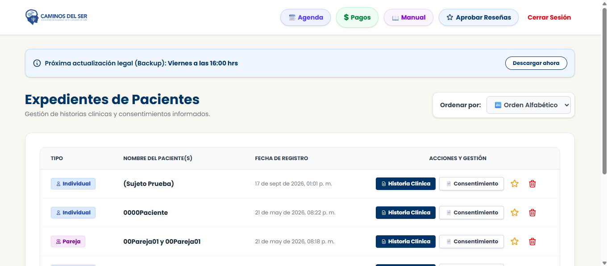

Paz mental clínica.
Seguridad absoluta.
No es un simple gestor de citas. Es un ecosistema clínico cerrado que blinda tu práctica psicológica con consentimientos criptográficos y gestiona expedientes bajo el rigor del Método HALCÓN.

Entorno Clínico Activo